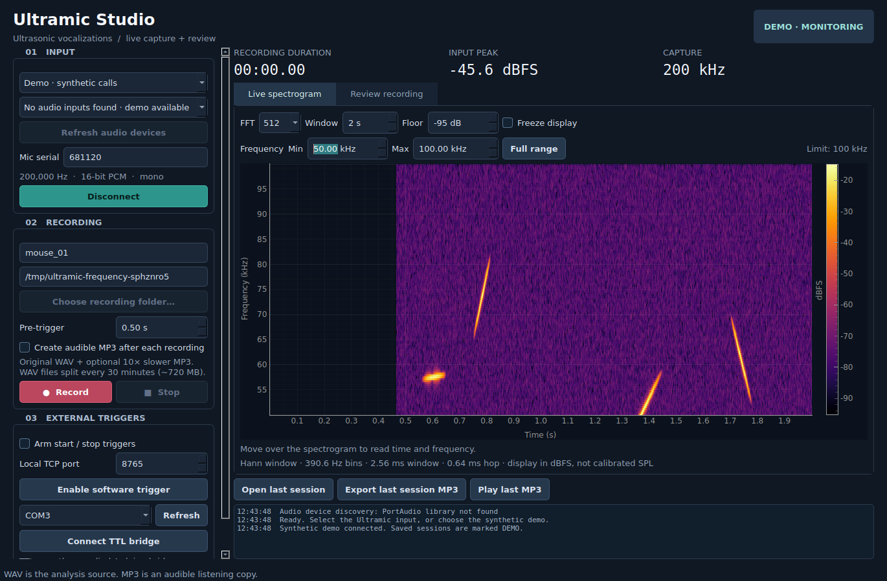

ULTRAMIC 200K · VERSION 0.1.2
Record the calls.
See the ultrasound.
Live spectrograms, original WAV recordings, audible MP3 copies, and external start/stop control.

Actual application screenshot in demo mode. These are synthetic calls.
Start on Windows — no Anaconda needed
- Close Ultramic Studio and Avisoft.
- Extract this updated ZIP and open its
UltramicStudio folder.
- Double-click
Start_Ultramic_Studio.cmd. Python and the app's libraries are included in the portable package.
- Confirm 0.1.2 in the window title. Select Ultramic 200K 16 bi [MME], then Connect & monitor.
For 64-bit Windows 10/11. Keep the entire folder together, including runtime, when copying it to another PC. No Anaconda, Python installation, or package downloads are needed.
Live monitoring does not save audio. Adjust Window for the time duration. Click Record to save a recording.
Choose the frequency range
Use Frequency → Min / Max above either spectrogram. Enter, for example, 50 and 100 kHz, then press Enter. The controls work during live monitoring and while the display is frozen. Full range resets the view.
Your Ultramic's upper limit is 100 kHz at 200,000 samples/s. An 80–120 kHz recording requires different hardware with a higher sampling rate. Display settings do not change the saved audio.
Optional: use an existing Anaconda or standard Python installation
If you already created the ultramic Conda environment, Start_Anaconda.cmd remains available. For a source-only setup with standard Python:
- Extract the entire ZIP into a writable folder, such as Documents. Keep its folders together.
- Install 64-bit Python 3.12 from python.org, including the Python launcher.
- Double-click
Setup_Windows.cmd. This installs the app's dependencies once; Internet access is needed.
- Double-click
Start_Ultramic_Studio.cmd.
To try the app without hardware, choose Demo · synthetic calls, then Connect & monitor → Record → Stop.
Connect your microphone
Disconnect demo mode, plug in the Ultramic, refresh devices, and choose its MME entry. Windows WASAPI and Windows WDM-KS are also supported. Close Avisoft or other applications using the same microphone.
The app requests 200,000 Hz, mono, 16-bit and refuses a lower-rate fallback. Run Check_Microphone.cmd if it fails to connect. Its report is saved as microphone_diagnostics.txt.
Trigger from software
Enable the software trigger and arm triggers. Your experiment program sends START or STOP to 127.0.0.1:8765.
Python and MATLAB examples are in examples.
Trigger from TTL
Use an external USB digital-input bridge. An Arduino Uno/Nano sketch is included. Default: D2 high starts, low stops. Separate start/stop pulse mode is also available.
See docs/TRIGGERS.md for wiring and setup.
What gets saved?
| Original WAV | 200 kHz / 16-bit / mono, unmodified. Use this for analysis. About 24 MB per minute. |
|---|
| Audible MP3 | 10× slower. A 60 kHz tone becomes 6 kHz. Useful for listening, not original ultrasound analysis. |
|---|
| Metadata | Device settings, sample positions, trigger events, and any detected capture errors. |
|---|
Click Open last session to find the files. Click Play last MP3 after the export finishes. Use Review recording to open a WAV and inspect a chosen time window.
Before the first experiment
This version passed software tests with synthetic audio. The physical Ultramic, Windows drivers, and Arduino bridge have not been tested here. Verify a short recording and both trigger edges on your recording PC.
USB triggers have variable latency and are not sample-synchronized to the audio. The microphone's 200 kHz sampling limits faithful frequency coverage to below 100 kHz.
Full user guide · Trigger wiring & protocol · Validation notes